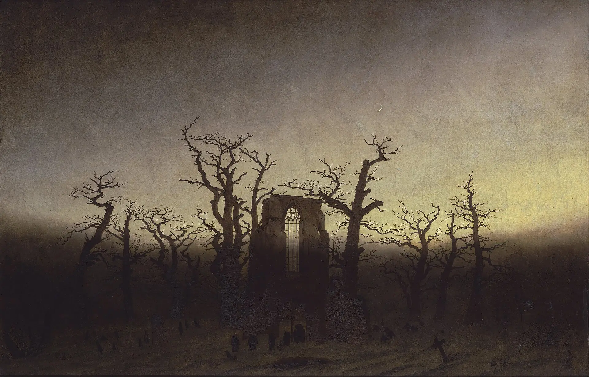
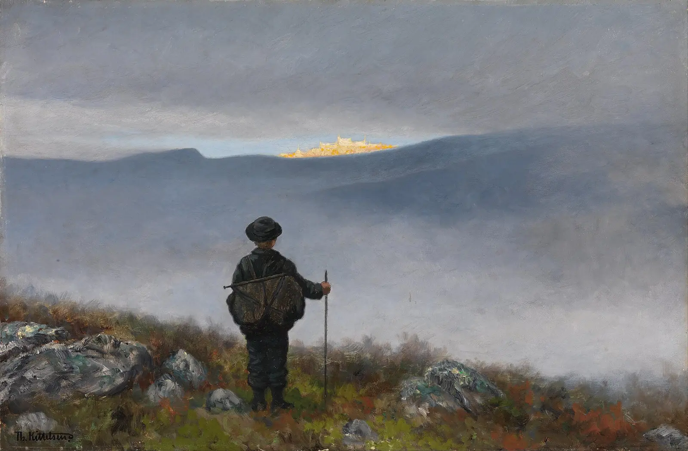
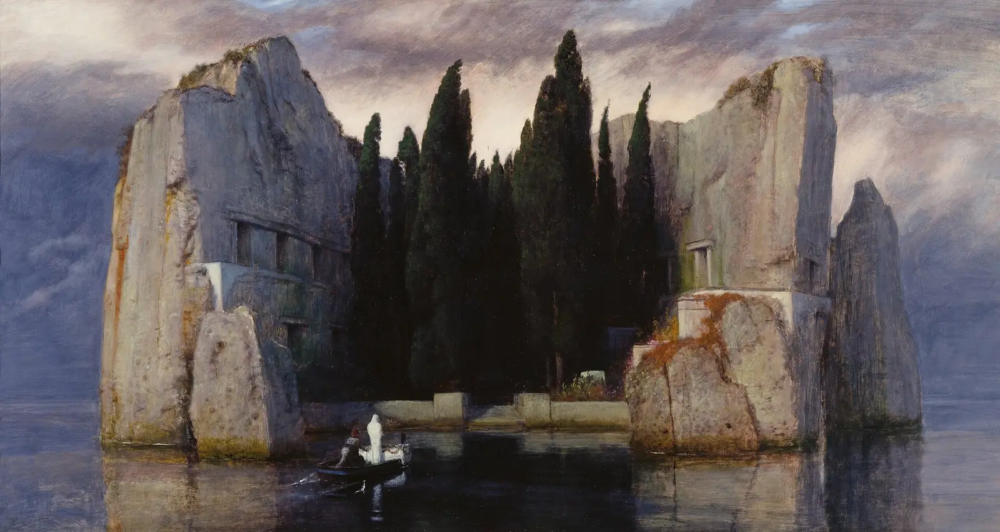
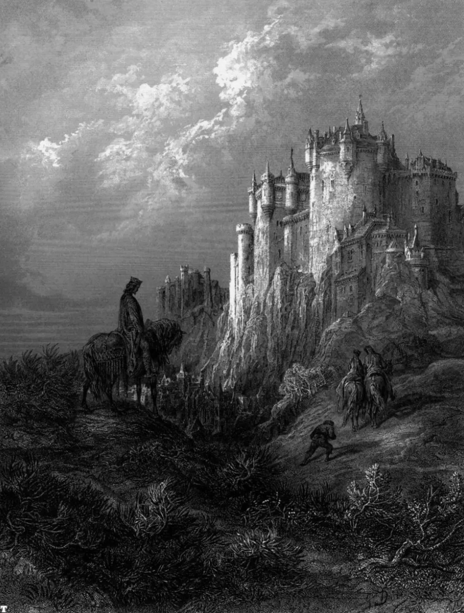
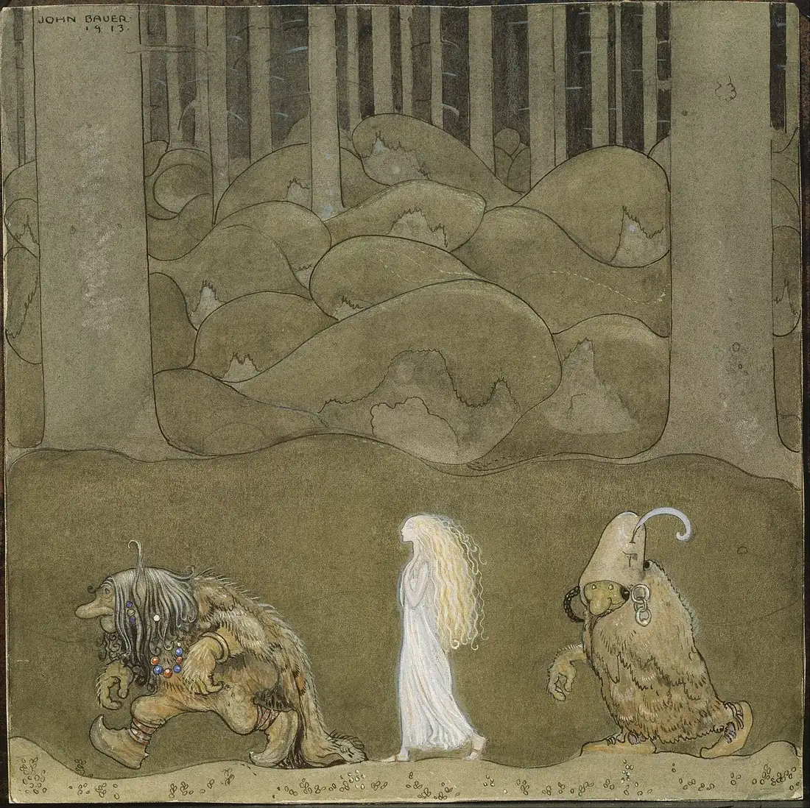
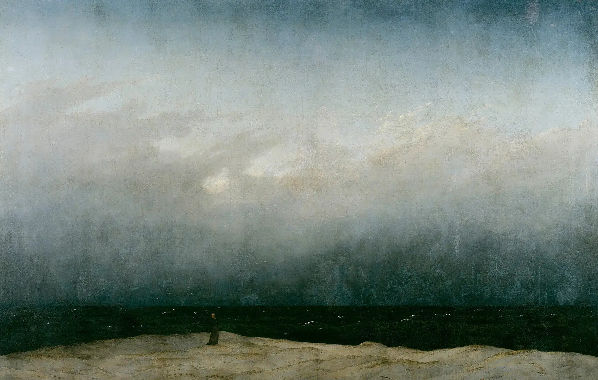
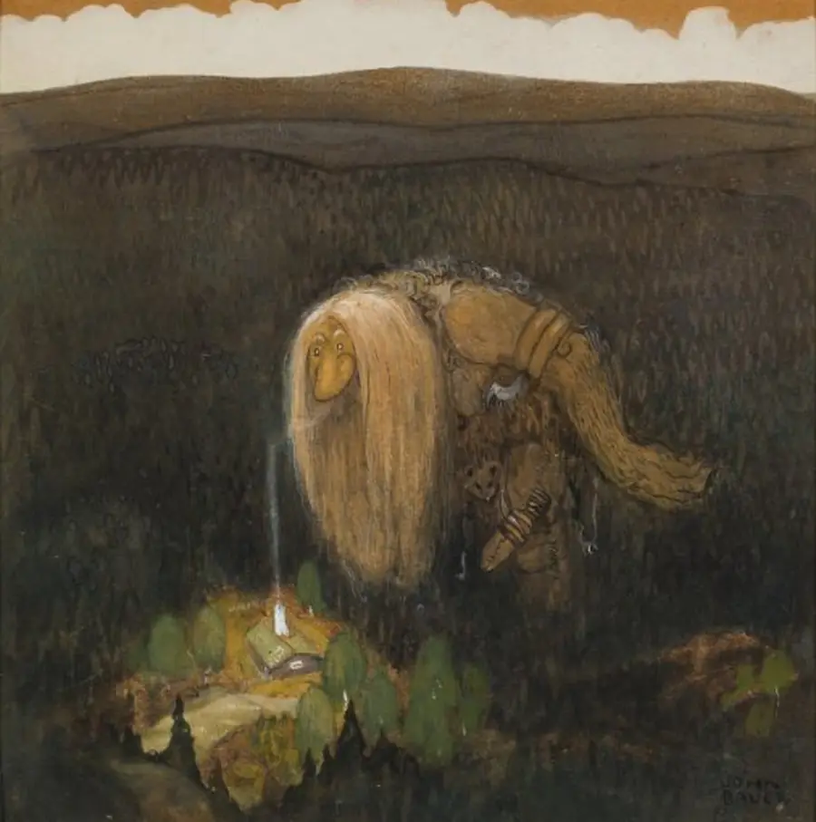
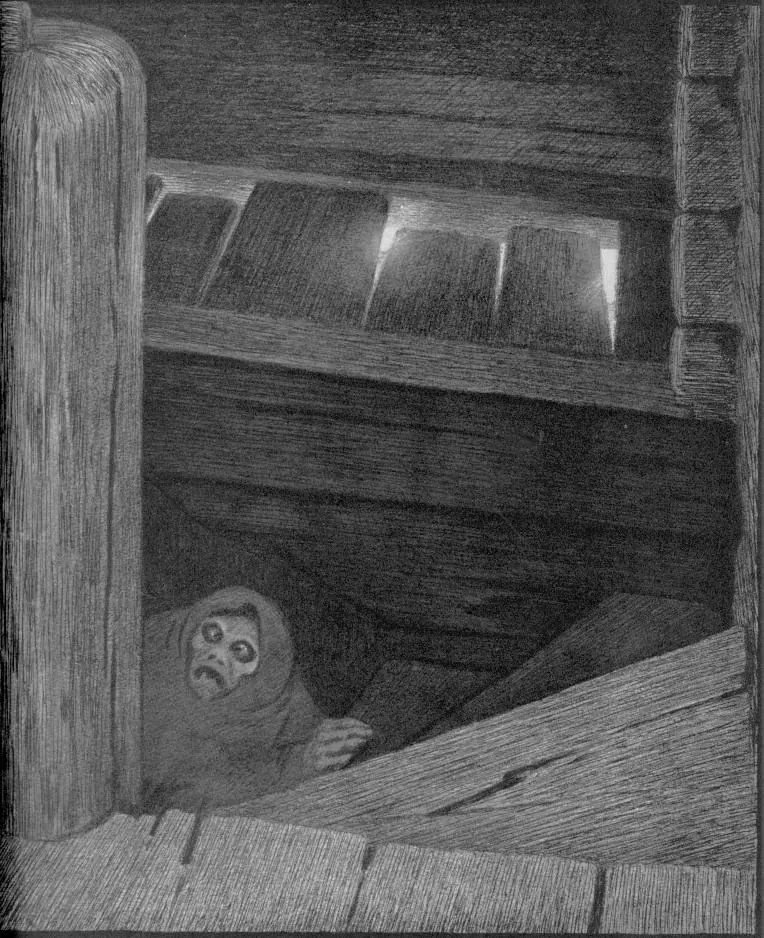
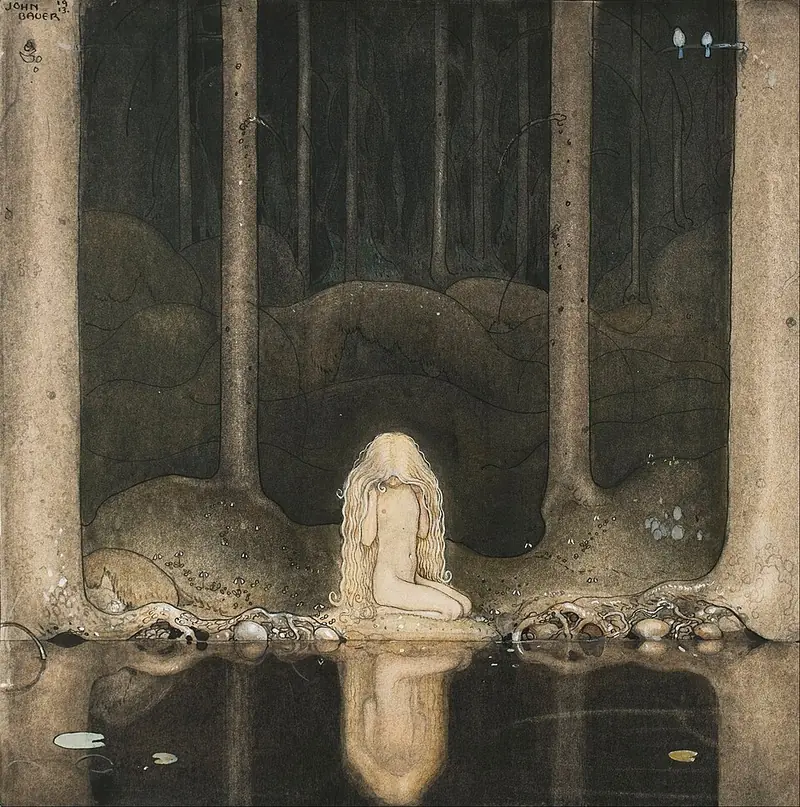

Sobre o site
Créditos das imagens
Pintores do século XIX e começo do XX que já imaginavam mundos como Adamar.
As imagens do site são obras em domínio público, obtidas no Wikimedia Commons. Elas não retratam Adamar: servem de clima, como as referências da inspiração visual. Clique no nome da obra para ver a origem.

A Abadia no Carvalhal
Caspar David Friedrich, 1809–1810. Página inicial.
Soria Moria
Theodor Kittelsen, 1900. O Mundo e Quero jogar.
A Ilha dos Mortos (III)
Arnold Böcklin, 1883. Cânone.
Ilustração para Idylls of the King
Gustave Doré, 1867. Personagens.
A Princesa e os Trolls
John Bauer, 1913. À Mesa.
O Monge à Beira-Mar
Caspar David Friedrich, 1808–1810. Crônicas.
Um Troll da Floresta
John Bauer, 1909. Cantos das páginas.
A Peste na Escada
Theodor Kittelsen, 1896. Cantos das páginas.
Tuvstarr diante do lago escuro
John Bauer, 1913. Cantos das páginas.